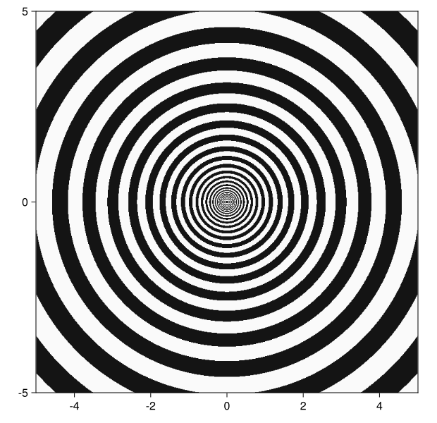

General Overview
DomainColoring.jl provides plots on top of the Makie framework, thus a user will have to additionally install and load a Makie backend such as CiaroMakie or GLMakie.
Common options
All plotting functions require a function $\mathbb{C} \to \mathbb{C}$ as first argument and accept optionally axis limits as a second.
If no limits are provided by default unit length is taken in all four directions. If a list of two numbers is provided the first is used as both limit in the real direction and the second in the imaginary direction. A list of four elements are interpreted as $({\rm Re}_{\rm min}, {\rm Re}_{\rm max}, {\rm Im}_{\rm min}, {\rm Im}_{\rm max})$.
Finally all plots have a keyword argument pixels by which one can specify the number of samples in respectively the real and imaginary direction. If only one number is provided it is used for both.
The remainder of this page gives a quick overview of the main plotting functions of DomainColoring.jl.
The domaincolor function
The phase output of domaincolor is generally not suited for those with color vision deficiency, refer to Plotting for Color Vision Deficiency instead.
By default domaincolor produces a phase plot such as the following.
domaincolor(sinc, (3, 1.5))
One can additionally superimpose contour lines of the magnitude as sweeps of increasing lightness by setting abs = true. Where this increase of lightness is taken proportional to the fractional part of $|f(z)|$.
domaincolor(sinc, (3, 1.5), abs=true)
Alternatively one can take it proportional to the fractional part of $\log|f(z)|$, by setting logabs = true. When both abs and logabs are set to true, logabs takes precedence.
domaincolor(sinc, (3, 1.5), logabs=true)
Finally, one can also add a dark grid where the imaginary or real part of $f(z)$ is integer by setting grid = true.
domaincolor(sinc, (3, 1.5), grid=true)
Of course these options can be combined, the common combination of abs = true and grid = true even has an abbreviation all = true.
domaincolor(sinc, (3, 1.5), all=true)
The checkerplot function
A checker plot shows limited information and is useful to detect patterns in certain contexts. By default a checker board pattern is used with five stripes for an unit increase in either direction. A checkerplot of the identity function makes this clearer.
checkerplot(z -> z)
You can limit the stripes to only show increase in the real or imaginary part by setting real = true or imag = true, respectively. Again the previous example.
checkerplot(z -> z, real=true)
Setting real = true and imag = true can be abbreviated to rect = true, which is identical to the default behaviour.
Alternatively one can also display a polar grid by setting polar = true, giving 5 band per unit increase of $\log|f(z)|$ and 32 bands per $2\pi$ increase of $\arg(f(z))$.
checkerplot(z -> z, polar=true)As with rect = true, polar = true is an abbreviation for abs = true and angle = true, showing magnitude and phase respectively. It is worthwhile to illustrate both, giving for magnitude:
checkerplot(z -> z, abs=true) and for phase:
checkerplot(z -> z, angle=true)